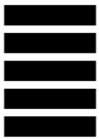

CERTIFIED DIAMONDS
The best choice for your pieces of jewelry
CARAT WEIGHT
The weight of a diamond is expressed in carats

CUT – CUT
The cut is the most important criterion of a diamond

COLOUR – COLOR
The white/colorless a diamond is, the more valuable it is

CLARITY – PURITY
This unit determines the purity of a diamond


GIA IS THE LEADING INTERNATIONAL CERTIFICATE FOR DIAMOND
QUALITY AND TRUST
Only a recognized certificate gives you the security that the information provided to the diamonds also apply. The discretion is, however, large. Therefore, we have decided to 123GOLD us, only with the best and most recognized laboratories to cooperate. Very reliable analyses confirm to you and to us, that the qualities of voices and of the diamond has, therefore, the appropriate value.
CARAT WEIGHT
The weight of diamonds is carat (English, carat, abbreviated as ct.)
specified. 1 carat is equal to 0.2 grams and is divided into 100
points. Therefore, a half a carat weighs 0.1 grams and has 50
points. Not to be confused with the weight of a diamond to its size,
which is additionally influenced by the dimensions of the diamond
and the cut quality is. Important to know: all factors equal,
diamond with a higher carat number of valuable as a diamond with
less weight.
The word carat derives from the Greek word "Keration" as a name for
the Pod of the carob tree, a mathematical miracle of nature: Every
full-grown seed, the Bean has the same weight. A metric carat is
equal to exactly 0.2 grams. Therefore, these seeds were used grains
formerly used by jewellers as a reliable measure for the weight of
Gold and precious stones.
For jewelry purposes of diamonds are used on all the sizes.
Brilliant from 1/4 carat, are particularly suitable for Solitaire
rings. In the following table, the various sizes of brilliant-cut
diamonds with your approximate diameter to be displayed. This can
vary depending on the individual execution of a diamond's cut.
CUT – CUT
The cut of a diamond determines the Sparkle of stone, and is the criterion, the influence the beauty of a diamond is important, because the proportions are crucial for the Reflection of the light. The ideal cut has an extraordinary brilliance, the best proportions and symmetry. The excellent cut and brilliance, proportions and symmetry are all excellent. The brilliance of drops on the graduations "very good" (= excellent brilliance), "good" (= good brilliance), "medium" (= slightly less brilliance) or "unusual" (= little brilliance). In the case of proportions and symmetry of the deviations with decreasing quality of the diamonds are bigger.
Excellent
Very good
Good
Fair
Poor
Optimum Grinding
Very Good cut
Good CutGood
Medium Cut
Low Cut
The best possible brilliance, no external characteristics
Excellent brilliance, a few or only minor exterior features
brilliance, some exterior features
Reduced brilliance, a number of major external features
Brilliance is significantly reduced, large and/or numerous exterior features
COLOUR – COLOR
Diamonds come in a variety of colors. The value of a diamond, the stone, the more sparkling and value: The more colorless full he is. White
light enters in the color spectrum of the rainbow again. The precious diamonds in the color "River" (= high fine White), followed by "Top
Wesselton" (= fine White), and including "cut diamonds" (= White, standard quality).
According to the laboratory is the color of diamonds with different terms, graduated at the
River, the color most, blue white diamond, bears the letters D and E.
F, and G denotes the fine White Top Wesselton.
Diamonds with the color of Wesselton are white and carry the letter h.
Meanwhile, so-called Fancy Diamonds, or "Fancies" a diamond with a clear, evenly coloring are traded, as even more valuable. Fancies only
make up one percent of the world production. Especially intense red and pink diamonds are extremely rare and therefore expensive.
Currently the most expensive diamond in the world, a pink stone in the emerald cut, with a weight of 24.7 carats was bought by a diamond
dealer for more than $ 46 million.

CLARITY – PURITY
A diamond is, the more pure and valuable, the fewer the inclusions it has. Under inclusions understood to be included minerals, cracks, or growth phenomena, which affect the optimal light penetration of the diamond. For jewelry, diamonds are not or are not immediately recognizable, it is important that inclusions visible to the naked eye. If diamonds serve as an investment, thus, a higher degree of purity is particularly important. Flawless diamonds, and the ten-times magnification no inclusions, are the purest diamonds and correspondingly rare . The official rating ranges from FL/IF (internally flawless) to P3 (coarse inclusions). The scheme in Detail: